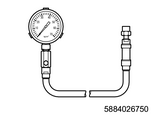

1. Start the engine.
Note
2. Turn OFF the ignition switch.
3. Disconnect the battery ground cable from the battery.
Caution
4. Remove the glow plug from the cylinder head assembly.
Note
5. Remove the harness connector from the injector.
6. Connect the battery ground cable to the battery.
7. Turn the starter.
Note
8. Install special tool to the cylinder head.
Note
SST: 5-8840-2815-0 - compression gauge adapter

SST: 5-8840-2675-0 - compression gauge
9. Measure the compression pressure.
Note
Standard： 2.840 to 3.240 MPa { 29 to 33 kgf/cm2 / 412 to 470 psi } Engine running speed 200 r/min
Limit： 1.96 MPa { 20 kgf/cm2 / 284 psi } Engine running speed 200 r/min
Difference between each cylinder： 294 kPa { 3.0 kgf/cm2 / 43 psi } Engine running speed 200 r/min
Caution
10. Remove special tool from the cylinder head.
11. Disconnect the battery ground cable from the battery.
Caution
12. Install the glow plug to the cylinder head assembly.
Note
tightening torque： 18 N・m { 1.8 kgf・m / 13 lb・ft }
13. Connect the harness connector to the injector.
14. Connect the battery ground cable to the battery.